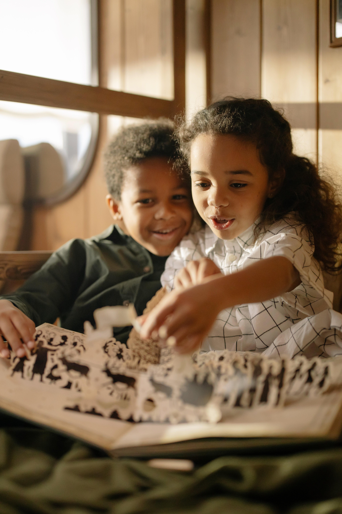
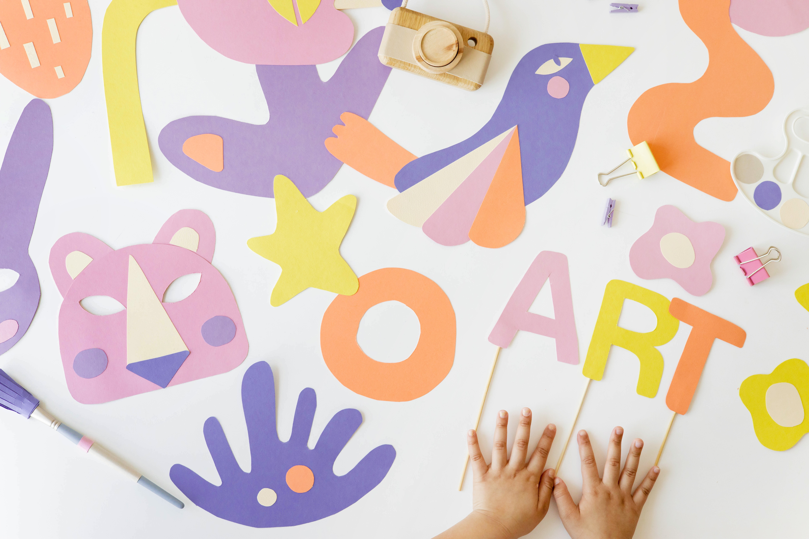

Diccionario
Afrontar

Definición:
Hacer cara a un peligro, problema o situación comprometida.
Ejemplo:
Para afrontar el miedo a las alturas, puedes ir poco a poco superando tus miedos.
Alcanzar

Definición:
Saber, entender o comprender algo.
Ejemplo:
Para alcanzar el objetivo de este curso, debemos estudiar y trabajar con los ejercicios de nuestro libro.
Extraordinario

Definición:
Fuera del orden o regla natural o común.
Ejemplo:
La historia que leímos era extraordinaria, nunca había leído nada parecido.
Impresiones

Definición:
Opinión, sentimiento, juicio que algo o alguien suscitan, sin que muchas veces se pueda justificar.
Ejemplo:
Después de ir al cine con mis amigos y amigas comentamos nuestras impresiones sobre la película que habíamos visto.
Lograrlo
Definición:
Conseguir o alcanzar lo que se desea o intenta.
Ejemplo:
Lograrás estar en forma si haces deporte normalmente.
Montar

Definición:
Armar. Poner en su lugar las piezas de cualquier aparato o máquina.
Ejemplo:
Para montar el dado, seguiremos las instrucciones, recortando y pegando según nos indique.
Resolver

Definición:
Solucionar un problema, una duda, una dificultad o algo que los entraña.
Ejemplo:
Para resolver el laberinto tuve que fijarme bien y realizar varios intentos hasta que lo conseguí.
Tapa

Definición:
Cada una de las dos cubiertas de un libro encuadernado.
Ejemplo:
Prefiero los cuentos de tapas duras para que no se estropeen cuando los leo.